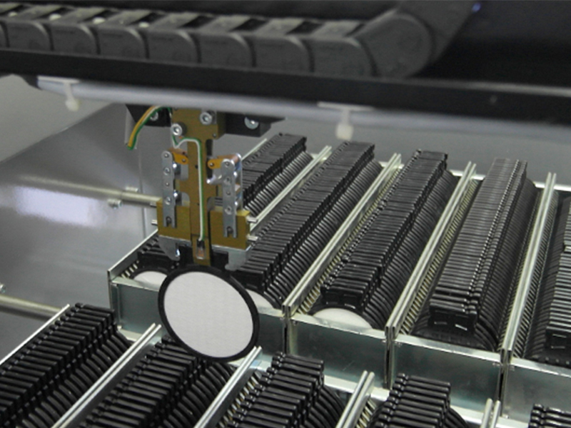

ONLINE AEROSOL MONITORING SYSTEMS
AMS02 Online-Aerosol Monitoring System
Measuring of radioactive aerosols, especially artificial nuclides
The aerosol measuring system AMS02 was developed for the online measurement of radioactive aerosols for the detection of artificial nuclides in the air by means of combined alpha, beta and gamma measurements.
The unique filter mechanism, unsurpassed measurement accuracy, combined online measurement of alpha, beta and gamma and the additional measurement of molecular iodine make our AMS02 the benchmark in our industry.
-
The aerosol measuring system uses two consecutive static filters:
- The first for aerosol particles
- A second planar filter for molecular iodine
The presence of non-natural radioactivity on one of the filters is detected by alpha, beta and/or gamma measurement. In the case of a warning or alarm signal, a third sampling and measuring unit is activated. The air stream exiting the molecular iodine filter is directed to an additional measuring position to detect organic iodine. The 500 filters are transported to the measuring positions with a manipulator and returned to the magazine after the measuring cycle.

Main applications:
- As a monitoring unit in a network for a large-scale early warning radiation system
- Monitoring of nuclear installations and facilities for the storage and treatment of nuclear waste
- Measuring unit in scientific and development institution
- Municipal control unit, mainly for the immediate control of accident radiation of the nuclear industry
Combined alpha, beta and gamma measurement in a single system
By using 4 detectors in a single system, there are 3 on-line measurement positions and a separate additional measurement position with special iodine evaluation filter material (in case of increased concentration) for efficient and reliable detection of artificial nuclides in the air. Radioactive iodine plays a very important role in this regard, as its presence in the air is considered a solid indication of a nuclear incident - and its rapid rate of propagation as a primary indicator.Well-founded know-how delivers precise results
Unique evaluation algorithms that have been used and refined for more than 20 years, as well as a highly configurable isotope library and the use of a coaxial germanium detector (HPGe - High Purity Germanium), provide accurate results and enable online isotope identification.Sophisticated measuring technology ultimately makes the difference
- Automatic calibration routine using natural content without additional radioactive sources
- Calibration parameters not only take into account the machine parameters but also the environmental conditions at the place of use
- The generous filter storage allows uninterrupted use of >1 year
- Database with data for each filter (eg date, time of last use, airflow and air volume data)
- A special vacuum pump ensures constant volume, regardless of temperature and filter deterioration. This allows comparable, meaningful results
Options for AMS02 Online Aerosol Monitor System
-
Container for AMS02 with air conditioning
- Isolated container (no windows)
- Door equipped with security lock
- Roof prepared for mounting a metrological station
- Roof frame with CEE plug with 32A for power supply (3 x 400 V AC/50 Hz)
- The floor is reinforced and allows a load capacity of 800 kg/m²
- Split-air conditioning
- Lightning protection
- Temperature
- Relative humidity
- Air pressure
- Wind speed, wind direction
- Precipitation
- GHIMM Cloud SCADA Software
- LED monitor with backlight
- UPS 1500VA
- VPN UMTS router
Weather station for AMS02 incl. mounting material for mounting on the container
Operation-Centre
Applications of AMS02
Early radiation warning system
In nationwide early radiation warning systems, aerosol monitoring systems are used to detect, above all, nuclear accidents, e.g. the Chernobyl or Fukushima disaster to warn the population in time. This applies in particular to radioactive iodine, since its presence in the air is considered to be solid evidence of a nuclear incident - and its rapid rate of propagation as a primary indicator.
Monitoring of nuclear installations
Aerosol monitoring systems are used to monitor nuclear power plants for power generation or nuclear facilities to produce isotopes for technical and medical applications.
Monitoring of the Nuclear Test Ban
The monitoring is the responsibility of the Comprehensive Test Ban Treaty Organization (CTBTO) based in Vienna. Its tasks include the establishment and maintenance of an international verification system (International Monitoring System, IMS). Currently, the verification system consists of over 300 monitoring stations, many of which are aerosol monitoring systems for the determination of radioactivity in the air.
Main Technical Parameters
- Size: 730 x 920 x 1520 (2100) mm
- Weight: approx. 415 kg
- Power: 230 V AC / 50 Hz / 950 VA
- Environment: Temperature -15°C + 25°C
- Relative Humidity: 0 - 70 %
- Accumulated air: Temperature -30°C + 40°C
- Relative humidity: 0 - 99 %
Detectors
- PIPS 1700 mm² - resolution 55 keV (α 241Am) < 30 keV (β)
- 2“ x 2“ Na(Tl) (2 pieces) - resolution 8 % (137Cs 662 keV)
- Coaxial germanium detector (HP Ge) with electric cooling - No liquid nitrogen required
resolution 2.0 keV FWHM at 1.33 MeV
resolution 2.0 keV FWHM at 1.33 MeV